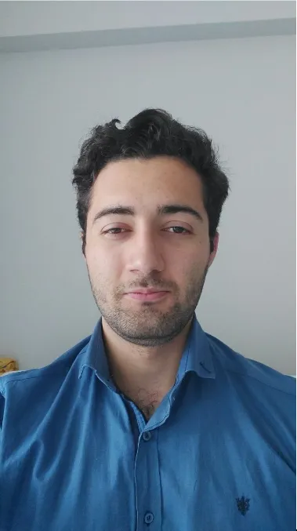

Volkan Tuncer
PLATFORM : Linux // ODAK : Gömülü Sistemler · PCB · Robotik
Teknolojinin yalnızca nasıl çalıştığını değil, nasıl bir sisteme dönüştürülebileceğini anlamaya odaklanıyorum. Devrelerden yazılıma, otomasyondan sistem entegrasyonuna kadar farklı disiplinleri bir araya getirerek teknik çözümleri yönetilebilir ve sürdürülebilir yapılara dönüştürüyorum. Eskişehir merkezli yürütmeyi hedeflediğim mühendislik vizyonumla; doğru teknolojiyi seçmek, doğru kaynakları bir araya getirmek ve ölçülebilir sonuçlar üretmek üzerine çalışıyorum.

Nasıl Biri?
Küçüklüğümden beri bir şeylerin nasıl çalıştığına dair merakım hiç bitmedi. Bir sistemi oluşturan parçaların nasıl bir araya geldiğini anlamak ve onları birlikte çalışırken görmek her zaman ilgimi çekti. Mekatronik mühendisliği de bu merakın doğal karşılığı oldu — elektronik, mekanik ve yazılımın kesişiminde çalışmak bana hem mantıklı hem de doğal geliyor. Zamanla bu merak, yalnızca sistemleri anlamaktan çok, onları bir bütün olarak düşünmeye ve ortaya çıkan sonucu yönetmeye dönüştü.
Multidisipliner bir yaklaşımla; gömülü sistemler, donanım tasarımı ve yazılım geliştirme alanlarını uçtan uca entegre eden sistem odaklı bir mühendisim.
- Yazılım & Sistemler: C ve Python odaklı mimariler, ileri seviye Linux ekosistemi ve Selenium otomasyonları.
- Gömülü & Tasarım: KiCad ile PCB tasarımı, SolidWorks ile mekanik modelleme, gömülü C programlama, Arduino ve Raspberry Pi mimarileri.
- Sistem Entegrasyonu: Münferit teknolojileri tek başına kullanmak yerine; donanım, gömülü yazılım ve otomasyon katmanlarını ihtiyaca uygun şekilde bir araya getirerek uçtan uca çalışan çözümler üretme yaklaşımı.
- Dil Yeterlilikleri: Türkçe (Ana Dil), İngilizce (Aktif / İş Düzeyi), Almanca (Öğrenim Aşamasında).


Bağlantı Kurun
Eskişehir veya Türkiye genelinde mühendislik projeleri, teknik sorular veya iş birlikleri için aşağıdaki kanallardan ulaşabilirsiniz.